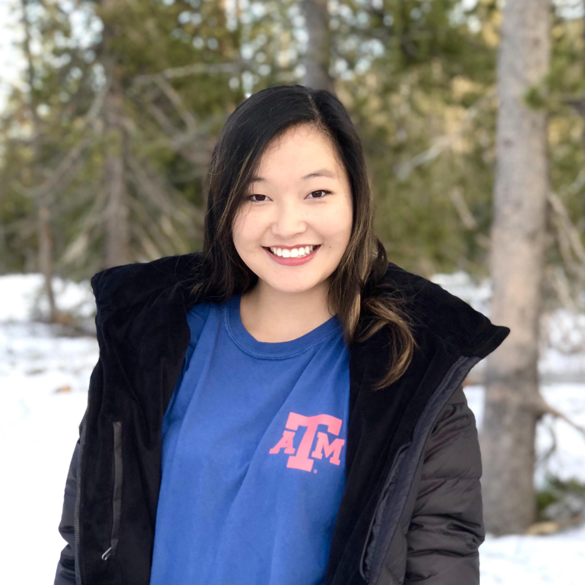

people
≡
faculty
 Dr. Andruid Kerne
Dr. Andruid Kerne Director, Interface Ecology Lab; Professor, Computer Science & Engineering
collaborating faculty
 Dr. Jorge Vanegas, Dean, College of Architecture
Dr. Jorge Vanegas, Dean, College of Architecture Dr. Steven M. Smith, Professor, Psychology
Dr. Steven M. Smith, Professor, PsychologyDr. Galen D. Newman, Assistant Professor, Landscape Architecture & Urban Planning
Dr. Jeremy Merril, Designer, April Philips Design Works
Dr. Bill Hamilton, Assistant Professor, Computer Science, New Mexico State University
 Dr. Zach Toups, Associate Professor, Computer Science, New Mexico State University
Dr. Zach Toups, Associate Professor, Computer Science, New Mexico State Universitystudents
 Nic Lupfer, Ph.D. Candidate, Computer Science
Nic Lupfer, Ph.D. Candidate, Computer Science Rhema Linder, Ph.D. Candidate, Computer Science
Rhema Linder, Ph.D. Candidate, Computer Science Ajit Jain, Ph.D. Candidate, Computer Science
Ajit Jain, Ph.D. Candidate, Computer Science Yin Qu, Ph.D. Candidate, Computer Science
Yin Qu, Ph.D. Candidate, Computer ScienceHannah Fowler, B.A. in Computing and Philosophy
Aaron Perrine, Undergraduate, Computer Science
alumni
 Bill Hamilton, Ph.D., Computer Science, 2018
Bill Hamilton, Ph.D., Computer Science, 2018→ Assistant Professor of Computer Science - New Mexico State University.
 Andrew M. Webb, Ph.D., Computer Science, 2017
→ Postdoctoral Researcher, CWIZach Toups, Ph.D., Computer Science, 2010
Andrew M. Webb, Ph.D., Computer Science, 2017
→ Postdoctoral Researcher, CWIZach Toups, Ph.D., Computer Science, 2010→ Associate Professor of Computer Science, Games & HCI specialty - New Mexico State University.
Jack Stenner, Ph.D., Architecture/Visualization, 2007
→ Associate Professor of Digital Media - University of Florida.
→ Associate Professor of Digital Media - University of Florida.
Eunyee Koh, Ph.D., Computer Science, 2008
→ Senior Research Scientist, Adobe Research.
 Mirko Mandic, M.S. Computer Science, 2004 → Head of Digital UX, Amazon Go
Mirko Mandic, M.S. Computer Science, 2004 → Head of Digital UX, Amazon GoJon Moeller, M.S. Student, Computer Engineering → UX Engineer, Google Project Aura
Shenfeng Fei, M.S., Computer Science, 2014
→ Software Engineer, Google Music
 Matthew Carrasco, M.S., Computer Science, 2018
Matthew Carrasco, M.S., Computer Science, 2018
→ Computer Science Research and Development: Member Level, Sandia National Laboratories
 Kade Keith, B.S., Computer Science, 2016 → Software Engineer, IBM Cloud Experience Lab
Kade Keith, B.S., Computer Science, 2016 → Software Engineer, IBM Cloud Experience Lab Feiyu Yu, M.S., Computer Science, 2017 → Software Engineer, LinkedIn
Feiyu Yu, M.S., Computer Science, 2017 → Software Engineer, LinkedIn Alyssa Valdez, B.S., Computer Science, 2017 → Software Engineer, Dell
Alyssa Valdez, B.S., Computer Science, 2017 → Software Engineer, DellHyun Choi, Ph.D., Psychology, 2005 → Korea National Rehabilitation Center, Head, Department of Motor and Cognitive Rehabilitation Research
J. Michael Mistrot, M.S. Visualization Sciences, 2003 → Technical Producer | CG Supervisor | Pipeline Developer | Mentor
Concentric Enterprises
Abhinav Mathur, M.S. Computer Science, 2009 → Software Engineer, Walmart eCommerce
Madhur Khandelwal, M.S. Computer Science, 2004 → NextForce Technology, Director of Engineering.
Nabeel Shahzad, M.S. Computer Science, 2011 → Software Engineer II, Microsoft.
Blake Dworaczyk, M.Sc., Computer Science, 2014
→ Senior Information Technology Professional I, Texas A&M University
Sarah Berry Cranston, B.S., Computer Engineering, 2007 → Associate Manager, User Interface, Accenture
Megan Schneider, B.S., Computer Science, 2006 → Software Engineer, Socrata.